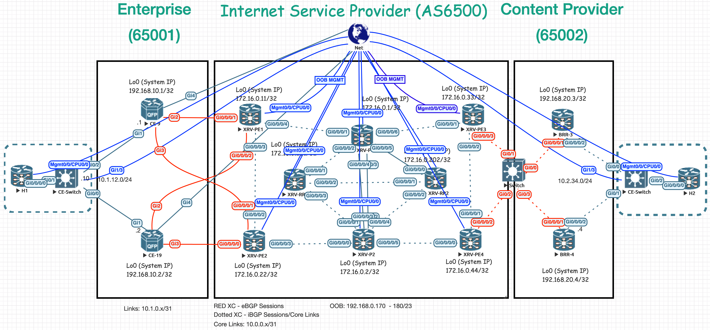

MPLS in the SDN Era –> DevNet SPAUTO
All of the study notes have now been moved to use auto-generated documentation to build a static site with Github Pages. Alongside all the code documentation, you will find a folder structure for notes in markdown broken down by test categories.
A lab topology based on MPLS in the SDN era book used for 300-535 SPAUTO studies
Cisco Certified DevNet Specialist - Service Provider Automation and Programmability
Why MPLS in the SDN Era?
Simple. This is an incredible book for any and all Network Engineers interested in learning technologies used in Service Provider environments. The book is heavily focused on MPLS, SDN, Segment-Routing, BGP, L2VPN/L3VPNs, over-all traffic engineering and much more. These are common terms within SP networks and the book does an incredible job in guiding the audience while exploring the device configurations in this topology. However, many other topics are not covered by the book and this REPO will hopefully fill in the gaps. This book lays the foundation for our lab topology, but it has increased and grown over time. Other material that has been helpful in studying is the Network Programmability with YANG book, which does cover a lot of the topics in the blueprint!
 This book goes through a number of device configurations in a multi-vendor lab topology (Cisco IOSXR && Juniper). However, For this lab, all devices have been replaced with Cisco-IOSXR/XE as we are working on a Cisco Certification.
To fully automate Service Provider Networks, you must understand Service Provider Networks.
What does this repository include & cover
My goal is to gather all of my self-training in this repository and cover all the major Cisco Certified DevNet Specialist (300-535 SPAUTO) topics.
Extras
There will be some extra material in this repository that can be an aid for other areas including but not limited to:
- Batfish
- Nornir
How can I use this repo to study?
I recommend for you to have access to a virtual lab environment that can run this topology. There are a total of 19 devices running in the lab scenario. 10 of them are IOSXR devices, which can consume up to 3GB each.
At this time, the lab configurations are not fully built. Once that is complete, I will be including a lab topology file with all the necessary information, etc. to import into EVE-NG.
30% of the SPAUTO exam is around Automation and Orchestration platforms, such as NSO. I can’t stress enough the importance of taking the time to setup an NSO instance to explore and take advantage of the many examples in this repository. Containerizing NSO for CI/CD is also part of the blueprint, which we will cover.
Why rely on this complicated lab topology?
I learn better when I am doing, not just reading and specially when breaking things. Having this complicated topology, building all the services in an automated way will be key to our success in passing the certification. There will be tons of material in the end that will cover all the topics in the exam.
Study Material & Resources
- MPLS in the SDN Era
- Network Programmability with YANG
- Nicholas Russo DEVNET Material (Pluralsight)